ヘルプ - RoboCupJunior コート作成環境
ロボカップジュニアレスキューラインの競技者のためのソフトウェアです。機能は以下の通りです。ルールは2022年版に準拠します。
アプリケーション版の配布はv1.1.1をもって終了しました。なおv1.1.1以前でもアプリケーション版をご利用になると思わぬ不具合が発生する場合がありますので、ブラウザ版(このソフトウェア)をご利用ください。
Githubでソースコードを公開しています(外部リンク)
 お願い
お願い
iPhone・iPadではブラウザのツールバーを非表示にしてお使いください。操作に支障をきたすおそれがあります。
また、各種スマートフォンは画面が小さいため横向きでのご利用を推奨いたします。
ソフトウェア内で使用する分かりにくい単語について
このソフトウェアでは、基本的にルールにのっとった単語を使用していますが、特にわかりにくい単語の使い分けを下に示します。
避難ゾーン (NRL2023ルール : 救助ゾーン)
壁で囲まれ、入口には銀色のテープ、出口には緑色のテープが貼られている(WRLのみ)、3x4タイルの場所。被災者が置かれる。
避難場所
WRLの避難ゾーン内にある、被災者とレスキューキットを運び込む黒色の場所のこと。
2023ルールでは赤色と緑色の2つになる。
ハザード
ライン中のギャップ、減速バンプ、交差点、行き止まり、傾斜路、障害物、シーソーのこと。
得点要素
このソフトウェア内では、ハザードに加えて、チェックポイント・ゴールタイルを含めた得点が発生するものすべて(被災者、レスキューキットを除く)を指す。
動作環境
正常動作確認済みの環境
Windows11 Home 22H2(Microsoft Edge v107.0.1418.26,Google Chrome v107.0.5304.88)
iPadOS 15.7(Safari v15.6.2)
iOS 16.0.3(Safari v16.0)
正常動作可能と思われる環境
Windows10(Microsoft Edge,Google Chrome,Opera,FireFox各最新版)
Windows11(Microsoft Edge,Google Chrome,Opera,FireFox各最新版)
Mac OS(Safari,Google Chrome,Microsoft Edge,Opera,FireFox各最新版)
Linux OS(Google Chrome,Microsoft Edge,Safari,Opera,FireFox各最新版)
Chrome OS(Google Chrome,Opera,FireFox各最新版)
AndroidOS(Google Chrome,Microsoft Edge,Safari,Opera,FireFox,Samsung Internet各最新版)
Web上でのみ動作可能な環境
iOS(Safari,Google Chrome,Microsoft Edge,Opera,FireFox各最新版)
iPadOS(Safari,Google Chrome,Microsoft Edge,Opera,FireFox各最新版)
動作不可能である環境
Windows10(旧Microsoft Edge,Internet Explorer,旧Opera)
上記にないOS
このソフトウェアについて
開発の経緯
2022年1月22日までは、同じくロボカップジュニアレスキューラインのコートを作成するソフトウェアとして「RoboCupJunior NRL コート作成環境」と「RoboCupJunior WRL コート作成環境」(ヘルプでは2つ合わせて「旧ソフトウェア」と表記)を開発していました。しかし、アップデートを重ね機能がほぼ同じになってきたこと、またWRL版でNRLのコートも作成可能であることから、WRL版にNRL版を組み込む形で新たにこの「RoboCupJunior コート作成環境」を作成することとしました。2022年1月29日に公開したRC3版で動作が安定したことからそれをv1.0.0とし、UIの改善と機能追加を重ねています。
バージョンの命名規則
セマンティック・バージョニングを参考にしており、vX.Y.Zのようにつけます。Xはメジャーバージョンで、RRLファイルの内部構造の変更など後方互換性がなくなる変更があった場合に数字を1つ上げます。Yはマイナーバージョンで、機能性を追加した場合に数字を1つ上げます。Zはパッチバージョンで、バグ修正など細かい変更の際に数字を1つ上げます。詳しくは下記URLをご覧ください
セマンティック バージョニング 2.0.0(https://semver.org/lang/ja/)
アプリケーションの調子が悪いときは
リロードせずに長時間使い続けると、動作が重くなったり不具合が出ることがあります。再読み込みするか、「Ctrl+F5」を押してスーパーリロードしてください。ただし、プロジェクトを保存するのを忘れないでください。なお、再読み込みを行っても自動保存データは保持されます。
その他
無断での転載、商用利用は禁止します。
付記
このソフトウェアの開発に力を貸してくださっている ゆき 氏に感謝申し上げます。
ロボカップジュニアレスキューラインのコースを作成できる機能です。ルールは2022年版に準拠します。なお、レスキューキット・被災者・避難場所等、得点走行毎に場所が異なるものを配置する機能はありません。
スタート
起動するとこのような画面が出ます。

 新規作成
新規作成
コートを新規作成します。下の「リーグを選択」でNRLかWRLを選んでからクリックしてください。コート作成画面でリーグを変更することはできません。
 プロジェクトの読み込み
プロジェクトの読み込み
作成途中のプロジェクトを読み込み、途中から編集作業を再開します。読み込むことができるファイルの拡張子は.rrlのみ(Safariでは.csvも可、ただしこのソフトウェアで作成されたもののみ)です。
注意
※保存と読み込みは基本的に同じバージョンで行ってください。違うバージョンで行った場合正常に読み込まれないことがあります。メジャーアップデートでRRLファイルの内部構造が変わった場合、新しいバージョンでは古いバージョンのファイルをサポートします。メジャーバージョンが2つ以上古いファイルはサポートしません。その場合はファイル変換をご利用ください。
※下の表で「読み込み可能」となっている場合でも、読み込む側のバージョンよりファイルを作ったバージョンが新しい場合は読み込めませんのでご注意ください。
RRLファイルの互換性
| 作成 |
| v1.0.0~v1.1.3 | v2.0.0~v2.0.2 | v3.0.0~v3.1.1 | v4.0.0~v4.2.2 | v4.3.0~v4.3.1 | v4.4.0~v4.6.0 |
| 読み込み | v1.0.0~
v1.1.3 | ○ | - | - | - | - | - |
v2.0.0~
v2.0.2 | △ | ○ | - | - | - | - |
v3.0.0~
v3.1.1 | × | △ | ○ | - | - | - |
v4.0.0~
v4.2.2 | × | × | △ | ○ | - | - |
v4.3.0~
v4.3.1 | × | × | △ | ○ | | - |
v4.4.0~
v4.6.0 | × | × | △ | ○ | | ○ |
○…読み込み可能 △…読み込み可能(古いバージョン) ×…ファイル変換が必要 - …不可能
読み込みに関する不具合
v4.3.0とv4.3.1では、コート作成機能において、2階部分を含むWRLコートのプロジェクトを保存した際に2階部分がうまく保存されない不具合が発生しています。この不具合はv4.4.0で修正されました。v4.3.0とv4.3.1で作成したファイルをv4.4.0以降で読み込んだ場合、その旨を知らせる警告が出ます。
 自動保存データの読み込み
自動保存データの読み込み
後述の自動保存したデータを読み込みます。
 ヘルプボタン
ヘルプボタン
ヘルプを表示します。
画面構成

① ツールバー
コート作成のためのツールを実行するボタンやヘルプがあります。
② タイル選択
コートに配置するタイルを選ぶことができます。この部分をスクロールすると「特殊タイル」や「タイル情報」があります。
③ コート
作ったコートを表示します。
④ ガイド
コート作成に役立つガイドを表示します。
使い方
タイルの配置
まず③で配置したいタイルをクリックします。次に「タイル情報」の任意の階のボタンをクリックします(1回「タイル情報」のボタンを押すとその設定は次に階を変えるまでタイルを変えても保持されます)。さらに③でそのタイルを配置したい場所をクリックします。するとそこにタイルが配置できます。ダブルクリックで向きを時計回りに90度変えることができます。
被災者ゾーンの自動入力
③の一番左上にある被災者ゾーンのタイルは4か所にしか置けません。置ける場所は一番左上、その4つ下、一番上の列の左から5番目、その4つ下です。置くと被災者ゾーンが自動入力されます。任意の場所に入り口をつけてください。この機能は6×8タイルの1階部分にのみ対応しています。
タイルの自動保存
ブラウザの予期せぬクラッシュなどに備えるため、作ったタイルは自動保存されます。保存されるのはタイルのみで、得点要素などは保存されません。すべてを保存するには「プロジェクトの保存」をしてください。コートを変更するごとに自動保存は上書きされ、それ以前の記録は消されます。
右クリックメニュー

③のタイルのどこかを右クリック(タッチデバイスでは長押し)すると右クリックメニューが表示されます。「このタイルの情報を削除」を押すと、そのタイルにある全ての情報が削除されます。未作成のタイルでは、下の3つの機能は停止されます。
チェックマーカー
「チェックマーカーを置く」を押すとクリックしたタイルの右上にチェックマーカーが置かれます。ラインとかぶることがあります。「チェックマーカーを取る」で削除できます。
障害物
「障害物を置く」を押すとクリックしたタイルの中央に障害物が置かれます。「障害物を取る」で削除できます。
バンプ

「バンプを置く」を押すと、上のような設定画面が出ます。まずバンプの個数を選びます。すると個数に合わせた入力欄が表示されるので、左側のスペース、上側のスペース、バンプの回転角度を半角数字で入力します。左側と上側のスペースは0~74で、37を指定すると中央に来ます。回転は-90~90で、0度を指定すると縦向きになり、数字が大きいほど右側に傾きます。下側のプレビューに現在の状態が反映されます。「決定」ボタンを押すと、クリックしたタイルにプレビューの通りにバンプが置かれます。右クリックメニューの「バンプを取る」を押すとすべて削除されます。
得点要素とチェックマーカー
得点要素があるタイルにはチェックマーカーは配置できないため、1つのタイルにはチェックマーカー・障害物・バンプのうちどれか1つしか配置できません。またシーソータイルは、得点要素のない直線のラインであるため、チェックマーカー・障害物・バンプは配置できません。
ツール
 スタート画面へ戻るボタン
スタート画面へ戻るボタン
スタート画面に戻ることができます。スタート画面に戻ったら「再開」ボタンが追加されているので、それを押すと元に戻ることができます。
 1階部分の作成/2階・半2階部分の作成ボタン
1階部分の作成/2階・半2階部分の作成ボタン
1階部分の作成と2階・半2階部分の作成を切り替えることができます。いまどちらを作成しているかはガイドに表示されています。2階部分を作成している場合、2階にタイルがない1階部分のタイルは灰色の背景で表示されています。
 グリッドの表示/非表示ボタン
グリッドの表示/非表示ボタン
コートのグリッドの表示・非表示を切り替えることができます。デフォルトではグリッドが表示されています。
プロジェクトの保存ボタン
作成途中のコートを保存できます。保存したファイルはまたこのシミュレーターで読み込めます。RRL形式(Safariはcsv形式)のファイルが、Windowsでは通常「ダウンロード」フォルダ(macOSでも同様、iOS・iPadOSはiCloudの「ダウンロード」フォルダ)に保存されます。クリックするとファイル名を入力するダイアログが出るので、入力してください。このとき拡張子の入力は不要です。
印刷ボタン
作成したコートのみを印刷できます。
注意
Microsoft Edgeで印刷する際は、「その他の設定」の「オプション」にある「背景のグラフィックス」をオンにしてください。
Google Chromeで印刷する際は、「詳細設定」の「オプション」にある「背景のグラフィック」をオンにしてください。
Firefoxで印刷する際は、「ページ設定」の「オプション」にある「背景色と背景画像も印刷」をオンにしてください。
 オールクリアボタン
オールクリアボタン
作成したコートのすべての情報を削除します。この操作は取り消せません。
 etc.6×8タイルボタン、4×9タイルボタン、3×12タイルボタン
etc.6×8タイルボタン、4×9タイルボタン、3×12タイルボタン
コートの大きさを変更します。間違って変更してしまっても、入力していたコートの大きさに戻せば「オールクリアボタン」を押していない限り元に戻ります。なお4×9タイル、3×12タイルは被災者ゾーンの自動入力には対応していません。
ヘルプボタン
ヘルプを表示します。
コート作成で保存したプロジェクトファイル(NRL)を利用し、実際に競技を行いながら得点を算出できる機能です。
スタート
起動するとこのような画面が出ます。アイコンをクリックしてプロジェクトを読み込みます。

プロジェクトの読み込み
任意のファイルを選ぶと得点計算を開始します。読み込むことができるファイルの拡張子は.rrlのみ(Safariでは.csvも可、ただしこのソフトウェアで作成されたもののみ)です。WRLのコートには対応していません。
注意
※保存と読み込みは基本的に同じバージョンで行ってください。違うバージョンで行った場合正常に読み込まれないことがあります。メジャーアップデートでRRLファイルの内部構造が変わった場合、新しいバージョンでは古いバージョンのファイルをサポートします。メジャーバージョンが2つ以上古いファイルはサポートしません。その場合はファイル変換をご利用ください。
※下の表で「読み込み可能」となっている場合でも、読み込む側のバージョンよりファイルを作ったバージョンが新しい場合は読み込めませんのでご注意ください。
RRLファイルの互換性
| 作成(コート作成) |
| v1.0.0~v2.0.2 | v3.0.0~v3.1.1 | v4.0.0~v4.6.0 |
読み込み
(NRL得点計算) | v4.1.0~
v4.6.0 | × | △ | ○ |
○…読み込み可能 △…読み込み可能だが非推奨 ×…ファイル変換が必要 - …不可能
ヘルプボタン
ヘルプを表示します。
得点計算のためのツールを実行するボタンやヘルプがあります。
② メニュー
競技の状況や、避難ゾーンの得点ボタンがあります。
③ コート
現在のコートの状況を表示します。
④ ガイド
得点計算に役立つガイドを表示します。
使い方

競技中の画面の一例。
競技開始・終了
「競技開始」を押すとタイマーがスタートし、無条件に5点加算されます。「競技終了」を押すとタイマーがストップします。もし競技が続行しているのに8分が経過した場合、競技を終了するようアラートが出ます。
ハザード (ライン中のギャップ、減速バンプ、傾斜路、障害物)
オレンジ色に光っているものはハザードです。クリックすると詳細が表示され、「クリア」を押すと得点が加算されます。すでにクリアしている場合、ハザードは灰色に光ります。クリックすると「取り消し」ボタンが表示され、取り消すことができます。
1タイルに2つギャップがある場合、タイルをクリックすると2つ分の詳細が表示されます。先にロボットが通るほうが1つ目と考えて「クリア」を押してください。2つクリアした後は「取り消し」ボタンが1個のみ表示され、クリックすると2つ分が取り消されます。
傾斜路は1タイルごとに認識します。ただし連続している傾斜路は2タイルで10点と定められているので、その場合はどちらかのタイルでのみ「クリア」ボタンを押してください。
チェックポイントでの得点
競技中、ロボットが通過した灰色のタイルをクリックすると青色に変化します。これは「通過済み」を表します。チェックマーカーがあるタイルをクリックすると、それまでの通過済みタイル数と競技進行の停止数(右クリックメニューで解説)から得られる点数を加算し、通過したタイルは白色になります。白色になったタイルのギャップ・傾斜路は、得点の変更ができなくなります。障害物、バンプは取り消し可能です。
ロボットが2回通過する十字路・十字ギャップは、2回とも同じ区間(スタートタイル・チェックマーカー～チェックマーカーの間)内であれば2回目の通過で青色が濃くなります。間違って2回押してしまった場合、もう1回押すと1回通過と同じ扱いになります。違う区間内で1回ずつ通過する場合は、1個目のチェックポイント通過では色が青色のまま据え置かれ、2回目の通過で青色が濃くなり、2個目のチェックポイント通過で白色になります。
避難ゾーンでの得点
②の「避難ゾーン」の部分にあるボタンを押せば、得点が加算されます。
右クリックメニュー

③の灰色のタイルのどこかを右クリック(タッチデバイスでは長押し)すると右クリックメニューが表示されます。
チェックマーカー
このソフトウェア上でもチェックマーカーを追加できます。「チェックマーカーを置く」を押すとクリックしたタイルの右上にチェックマーカーが置かれます。ラインとかぶることがあります。「チェックマーカーを取る」で削除できます。
通過の取り消し
誤ってロボットが通過していないタイルをクリックしてしまった場合、これで元に戻すことができます。通過タイルをきちんと記録しないと得点が不正確になりますので、競技通りに記録してください。
競技進行の停止
「競技進行の停止」を押すとタイルの右上に赤丸が表示され、そのタイルでの競技進行の停止数が表示されます。通過は取り消しされます。もう一度挑戦して通過できたときには、クリックして青色に戻してください。通過タイルと同様きちんと記録しないと得点が不正確になります。現在の区間(スタートタイル・チェックマーカー～チェックマーカーの間)での競技進行の停止数の合計は②に表示されます。
「競技進行の停止を1回取り消し」を押すとそのタイルでの競技進行の停止を1回取り消すことができます。
「競技進行の停止数」には、そのタイルでの競技進行の停止数が表示されます。
ツール
スタート画面へ戻るボタン
スタート画面に戻ることができます。スタート画面に戻ったら「再開」ボタンが追加されているので、それを押すと元に戻ることができます。
グリッドの表示/非表示ボタン
コートのグリッドの表示・非表示を切り替えることができます。デフォルトではグリッドが表示されています。
 競技の詳細ボタン
競技の詳細ボタン
現在行っている競技の詳細情報を閲覧することができます。
印刷ボタン
競技時間、得点、コートの状況を印刷できます。
注意
Microsoft Edgeで印刷する際は、「その他の設定」の「オプション」にある「背景のグラフィックス」をオンにしてください。
Google Chromeで印刷する際は、「詳細設定」の「オプション」にある「背景のグラフィック」をオンにしてください。
Firefoxで印刷する際は、「ページ設定」の「オプション」にある「背景色と背景画像も印刷」をオンにしてください。
 得点一覧ボタン
得点一覧ボタン
日本リーグレスキューの2022ルールに基づき、各要素ごとの得点を掲載しています。詳細な規定はルールをご覧ください。
etc.6×8タイルボタン、4×9タイルボタン、3×12タイルボタン
コートの大きさを変更します。間違って変更してしまっても、入力していたコートの大きさに戻せば「オールクリアボタン」を押していない限り元に戻ります。
ヘルプボタン
ヘルプを表示します。
コート作成で保存したプロジェクトファイル(WRL)を利用し、実際に競技を行いながら得点を算出できる機能です。
スタート
起動するとこのような画面が出ます。アイコンをクリックしてプロジェクトを読み込みます。
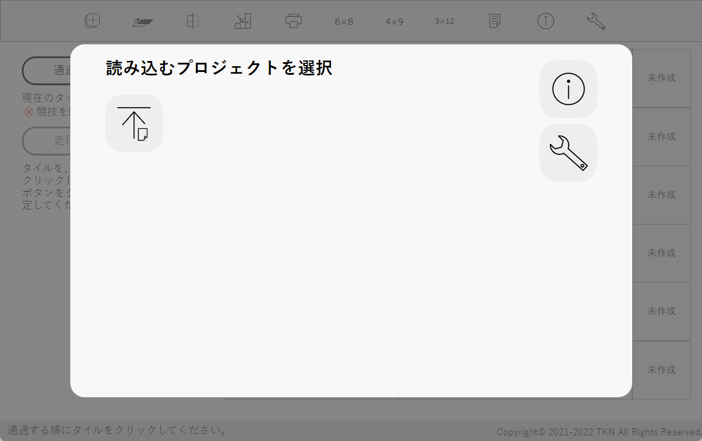
プロジェクトの読み込み
任意のファイルを選ぶと得点計算を開始します。読み込むことができるファイルの拡張子は.rrlのみ(Safariでは.csvも可、ただしこのソフトウェアで作成されたもののみ)です。NRLのコートには対応していません。
注意
※保存と読み込みは基本的に同じバージョンで行ってください。違うバージョンで行った場合正常に読み込まれないことがあります。メジャーアップデートでRRLファイルの内部構造が変わった場合、新しいバージョンでは古いバージョンのファイルをサポートします。メジャーバージョンが2つ以上古いファイルはサポートしません。その場合はファイル変換をご利用ください。
※下の表で「読み込み可能」となっている場合でも、読み込む側のバージョンよりファイルを作ったバージョンが新しい場合は読み込めませんのでご注意ください。
RRLファイルの互換性
| 作成(コート作成) |
| v1.0.0~v2.0.2 | v3.0.0~v3.1.1 | v4.0.0~v4.2.2 | v4.3.0~v4.3.1 | v4.4.0~v4.6.0 |
読み込み
(WRL得点計算) | v4.4.0~
v4.6.0 | × | △ | ○ | | ○ |
○…読み込み可能 △…読み込み可能だが非推奨 ×…ファイル変換が必要 - …不可能
読み込みに関する不具合
v4.3.0とv4.3.1では、コート作成機能において、2階部分を含むWRLコートのプロジェクトを保存した際に2階部分がうまく保存されない不具合が発生しています。この不具合はv4.4.0で修正されました。v4.3.0とv4.3.1で作成したファイルをv4.4.0以降で読み込んだ場合、その旨を知らせる警告が出ます。
ヘルプボタン
ヘルプを表示します。
走行順序の決定

プロジェクトを読み込むとこのような画面が出ます。避難ゾーン、白色、未作成のタイルは背景が白になり選択できないようになります。ロボットが通過する順にタイルをクリックして、「走行順序の決定」ボタンを押してください。「走行順序の決定」ボタンはタイルを8枚以上選択すると押せるようになります。
走行順序の決定画面の操作方法
タイルをクリックすると青色になり、右上に数字が表示されます。数字は、競技を通してロボットがそのタイルを通る回数を示しています。
「通過を取り消し」ボタンを押すと直前の操作が取り消せます。
2階部分のタイルは「2階部分を表示」ツールを使って2階に移動した後選択してください。各種ツールの使い方は後述していますのでそちらをご参照ください。
レベル選択
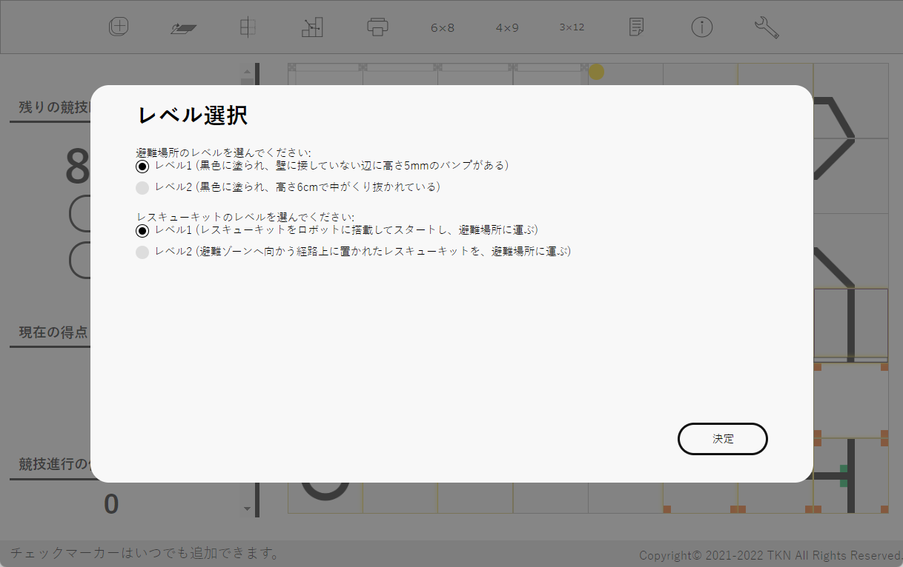
走行順序を決定するとこのような画面が出ます。避難場所、レスキューキットについて競技者が選択してください。この後の変更はできません。
画面構成
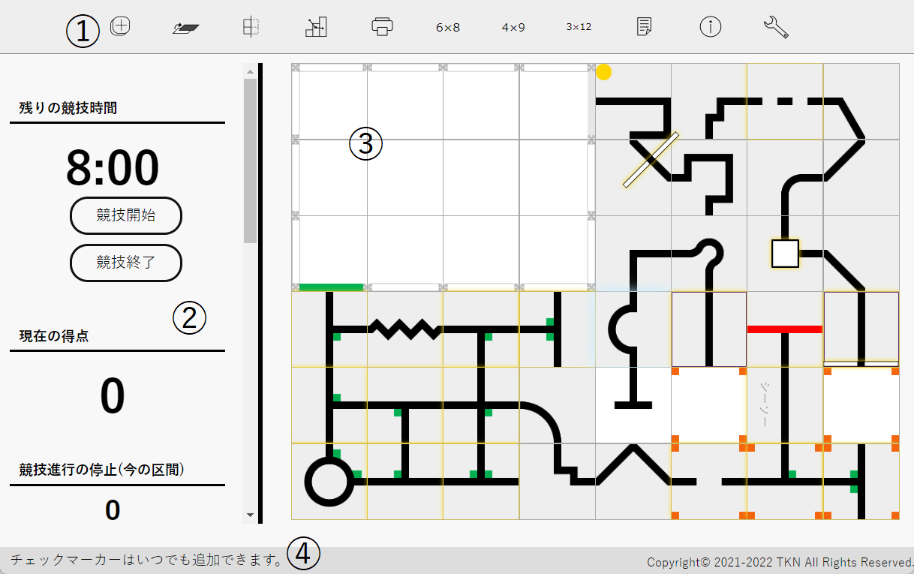
① ツールバー
競技の進行を補助したり、詳細を確認するためのツールがあります。
② メニュー
競技を進めるためのツールがあります。
③ コート
現在のコートの状況を表示します。
④ ガイド
得点計算に役立つガイドを表示します。
使い方

競技中の画面の一例。
オレンジ色に光っているものは得点要素です。すでにクリアしている場合、得点要素は光りません。競技の進行は、タイルや得点要素をクリックするのではなく、すべて左側のメニューで行います。
競技開始・終了
「競技開始」を押すとタイマーがスタートし、無条件に5点加算されます。「競技終了」を押すとタイマーがストップします。もし競技が続行しているのに8分が経過した場合、競技を終了するようアラートが出ます。
「現在走行中のタイル」の見方
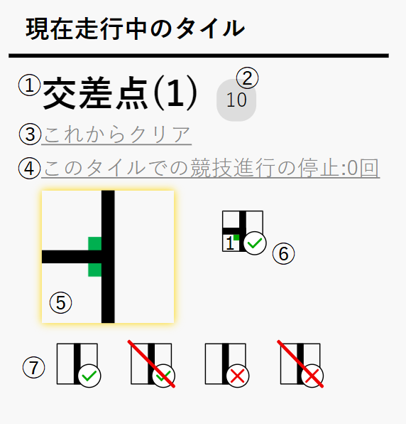
現在ロボットが走行中のタイル)には、青の影がついています(場合によっては見えにくいこともあります)。
①タイルの要約
得点要素が何もない場合は「通常のタイル」、得点要素があればその名前が表示されます。
②得点合計
そのタイルにある得点要素をすべてクリアした場合の得点合計が表示されます(チェックマーカーの得点も含む)。
③クリア状況
ハザードがあればクリア状況が灰色文字・下線で表示されます。
④競技進行の停止数
競技進行の停止数が灰色文字・下線で表示されます。
⑤走行中のタイルの画像
現在走行中のタイルと同じものを拡大表示しています。
⑥ハザードを扱うツール
ハザードがあれば、それに関連するツールが表示されます。

 etc.ギャップのクリア・取り消し
etc.ギャップのクリア・取り消し
ギャップが含まれるタイルの場合のみ表示され、ギャップのクリア・取り消しを行います。1タイルに2つギャップがある場合、先にロボットが通るほうが1つ目と考えて「クリア」を押してください。2つクリアした後は「取り消し」が1個のみ表示され、クリックすると2つ分が取り消されます。
 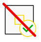障害物のクリア・取り消し
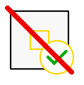障害物のクリア・取り消し
障害物が含まれるタイルの場合のみ表示され、障害物のクリア・取り消しを行います。
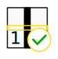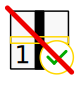etc.バンプのクリア・取り消し
バンプが含まれるタイルの場合のみ表示され、バンプのクリア・取り消しを行います。バンプの番号は、コート作成時のバンプ作成画面で指定した番号です。各バンプは独立してクリア・未クリアの状態を扱っているため、必ずしも順番通りにクリアする必要はありません。
 傾斜路のクリア・取り消し
傾斜路のクリア・取り消し
傾斜路が含まれるタイルの場合のみ表示され、傾斜路のクリア・取り消しを行います。
 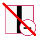傾斜路のスキップ・取り消し
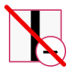傾斜路のスキップ・取り消し
傾斜路が含まれるタイルの場合のみ表示され、傾斜路のスキップ・取り消しを行います。傾斜路は1タイルごとに認識しますが、連続している傾斜路は2タイルで10点と定められているので、その場合はどちらかのタイルで「傾斜路をスキップ」を押してください。
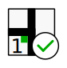 etc.交差点のクリア・取り消し
etc.交差点のクリア・取り消し
交差点が含まれるタイルの場合のみ表示され、ギャップのクリア・取り消しを行います。1タイルに2つ交差点がある場合、先にロボットが通るほうが1つ目と考えて「クリア」を押してください。2つクリアした後は「取り消し」が1個のみ表示され、クリックすると2つ分が取り消されます。
 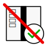シーソーのクリア・取り消し
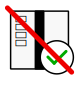シーソーのクリア・取り消し
シーソーが含まれるタイルの場合のみ表示され、シーソーのクリア・取り消しを行います。
⑦ライントレースを進めるツール
ライントレースを進めるためのツールが常に表示されます。
 このタイルを通過
このタイルを通過
現在走行中のタイルを通過扱いにします。チェックマーカーがある場合は、それを押した時点で得点が加算されます(詳細は下の「チェックポイントでの得点」を参照)。チェックポイントでの得点加算後は、そのタイルには戻れません。
 直前の通過を取り消し
直前の通過を取り消し
直前の通過をもとに戻します。ハザードの状態は元のまま維持されています。プログラムの誤動作防止のため、2つ以上前のタイルには戻れません。
 このタイルで競技進行の停止
このタイルで競技進行の停止
このタイルで競技進行の停止を行います。タイルの右上に赤丸が表示され、そのタイルでの競技進行の停止数が表示されます。もし避難ゾーンを出た後最初のチェックポイント(ない場合ゴール)に着いていなければ、乗数から数値(避難場所のレベルによる)が引かれます。
このタイルの競技進行の停止を1回取り消し
このタイルの競技進行の停止を1回取り消します。乗数も元に戻ります。
チェックポイントでの得点
チェックマーカーがあるタイルを通過すると、それまでの通過済みタイル数と競技進行の停止数から得られる点数を加算し、通過したタイルは白色になります。白色になったタイルでは、そこにある得点要素も含め得点の変更ができなくなります。
ロボットが2回以上通過するタイルは、チェックポイントを通過しても、その競技中の最後の通過まで白色になりません。
避難ゾーンでの得点
メニューの「避難ゾーン」の部分にあるボタンを押せば、避難場所とレスキューキットのレベルに応じて乗数を獲得できます。獲得した乗数はボタンの下部に表示されています。競技詳細では得点と乗数を別々に四捨五入しているため、表面上は計算が合わない場合があります。
右クリックメニュー

コートの灰色のタイルのどこかを右クリック(タッチデバイスでは長押し)すると右クリックメニューが表示されます。
チェックマーカー
このソフトウェア上でもチェックマーカーを追加できます。「チェックマーカーを置く」を押すとクリックしたタイルの右上にチェックマーカーが置かれます。ラインとかぶることがあります。「チェックマーカーを取る」で削除できます。
ツール
スタート画面へ戻るボタン
スタート画面に戻ることができます。スタート画面に戻ったら「再開」ボタンが追加されているので、それを押すと元に戻ることができます。
1階部分の表示/2階・半2階部分の表示ボタン
1階部分の表示と2階・半2階部分の表示を切り替えることができます。いまどちらを表示しているかはガイドに表示されています。2階部分を表示している場合、2階にタイルがない1階部分のタイルは灰色の背景で表示されています。
グリッドの表示/非表示ボタン
コートのグリッドの表示・非表示を切り替えることができます。デフォルトではグリッドが表示されています。
競技の詳細ボタン
現在行っている競技の詳細情報を閲覧することができます。
印刷ボタン
競技時間、得点、コートの状況を印刷できます。
注意
Microsoft Edgeで印刷する際は、「その他の設定」の「オプション」にある「背景のグラフィックス」をオンにしてください。
Google Chromeで印刷する際は、「詳細設定」の「オプション」にある「背景のグラフィック」をオンにしてください。
Firefoxで印刷する際は、「ページ設定」の「オプション」にある「背景色と背景画像も印刷」をオンにしてください。
得点一覧ボタン
日本リーグレスキューの2022ルールに基づき、各要素ごとの得点を掲載しています。詳細な規定はルールをご覧ください。
etc.6×8タイルボタン、4×9タイルボタン、3×12タイルボタン
コートの大きさを変更します。間違って変更してしまっても、入力していたコートの大きさに戻せば「オールクリアボタン」を押していない限り元に戻ります。
ヘルプボタン
ヘルプを表示します。
古いバージョンのコート作成で保存したプロジェクトファイル(WRL)の情報を、新しいバージョンで読み込めるように更新します。
画面構成
① ツールバー
ツールやヘルプがあります。
② ファイル選択
使い方
②をクリックすると、ファイル選択画面が出ます。RRL形式のファイル(Safariでは.csvも可、ただしこのソフトウェアで作成されたもののみ)を開いてください。開くと自動で変換が始まります。②の下部にファイルの情報と現在の状態が表示されます。矢印がすべて黒くなったら、変換されたファイルが、Windowsでは通常「ダウンロード」フォルダ(macOSでも同様、iOS・iPadOSはiCloudの「ダウンロード」フォルダ)に保存されます。
書き出したバージョンと読み込むバージョンで、メジャーバージョンが同じなら変換せずに利用できますが、同じメジャーバージョン内で最新のものにする機能もついています。
ツール
もう1度変換ボタン
②にあるファイルをもう1度変換できます。
ヘルプボタン
ヘルプを表示します。
これまでの変更履歴をすべて表示しています。
v4.6.0
- ・2022.11.公開
- ・NRL得点計算で、2023ルールに対応
- ・NRL得点計算で、被災者を1体も見つけていなくても脱出できる不具合を修正
- ・NRL得点計算で、避難ゾーン(救助ゾーン)を脱出すると競技が自動で終了するよう変更
- ・NRL得点計算で、通過の取り消しや競技進行の停止をすると該当タイルの背景が白くなる不具合を修正
- ・ヘルプにタブUIを実装
v4.5.4
- ・2022.10.17公開
- ・モバイル端末において、ヘルプの一部のボタンにcssが当たっていない事象を修正
- ・モバイル端末において、ヘルプのホバー時デザインを撤廃
- ・ヘルプ,READMEのSafariバージョンがwebkitバージョンになっていた事象を修正
- ・ユーザーガイドで、画面が狭くなると表が画面から飛び出す事象を修正
- ・ユーザーガイドのモバイル向けデザイン対応
v4.5.3
- ・2022.10.16公開
- ・バージョン情報の追加
- ・コート作成で、2階部分でのタイルの回転に関する不具合を修正
- ・メニュー、右クリックメニュー、ヘルプのリンクのデザインを変更
- ・CSSを最適化
- ・ヘルプの変更履歴を折りたためるよう変更
v4.5.2
- ・2022.08.19公開
- ・一部タイルで、グリッドを非表示にしても細いグリッドが残る事象を修正
- ・動作環境を更新
v4.5.1
- ・2022.07.09公開
- ・一部タイルのラインが中心からずれている事象を修正
- ・WRL得点計算の競技詳細で、文面を変更
- ・NRL得点計算で、競技進行の停止を右上のマーカーで管理するよう変更
- ・CSSを最適化
v4.5.0
- ・2022.06.09公開
- ・WRL得点計算の走行順序の決定で、現在選択しているタイル数と競技を開始できるかどうかを表示するよう変更
- ・WRL得点計算の走行順序の決定で、取り消し機能を追加
- ・WRL得点計算の乗数表示に連番を振るよう変更
- ・NRL得点計算で、競技を開始しないと操作ができないよう変更
- ・NRL得点計算で、使えないボタンを灰色にするよう変更
- ・コート作成で、ボタンが旧デザインになっていた不具合を修正
旧ソフトウェア(NRL版)の更新履歴
v3.2.1
- ・2022.01.01公開
- ・プロジェクトの読み込み時にエラーが発生した場合、自動で再読み込みするように変更
- ・坂・2階部分に設定したタイルに新しいタイルを置きなおすと赤枠が消えてしまう事象を修正
v3.2.0
- ・2021.12.29公開
- ・バンプ機能を搭載
- ・プロジェクトの保存の際にファイル名を指定できるよう変更
- ・右クリックメニューのプログラムの効率化
v3.1.1
- ・2021.12.28公開
- ・プロジェクトの保存・読み込みの際ガイドを表示するように変更
- ・プロジェクトの読み込み時に読み込み前の障害物・チェックマーカーが表示され続ける事象を修正
- ・プロジェクトの読み込みが複数回できない場合がある事象を修正
- ・プロジェクトの読み込み時ファイル選択画面に拡張子制限を追加
- ・起動ファイルの名称を変更
- ・ヘルプに注意書きを追加
v3.1.0
- ・2021.12.28公開
- ・グリッドの表示・非表示機能を追加
- ・プロジェクトの読み込みに失敗したときのエラーが表示されない事象を修正
- ・印刷時の背景を白に変更
- ・ヘルプの語句の修正
v3.0.1
- ・2021.12.27公開
- ・ギャップタイルにチェックマーカーが置けないように変更
- ・障害物を置いた際タイルのラインが透ける事象を修正
- ・ヘルプに「変更履歴」を追加
- ・ヘルプの語句の修正
v3.0.0
- ・2021.12.25公開
- ・ドラッグ＆ドロップUIからv1.0.0同様のクリックUIに変更
- ・障害物配置機能を搭載
- ・プロジェクトの保存・読み込み機能を搭載
- ・オールクリア・タイル情報の削除時にチェックマーカーも削除できるように変更
- ・ヘルプに「動作環境」を追加
v2.0.0
- ・2021.10.16公開
- ・ドラッグ＆ドロップUIに変更
v1.0.0
旧ソフトウェア(WRL版)の変更履歴
v1.1.2
- ・2022.01.21公開
- ・避難ゾーンを複数回配置しようとしたときに警告が出るよう変更
- ・通常タイルを選択してから被災者ゾーン自動入力タイルを選択して入力すると前に選択したタイルで上書きされる事象を修正
v1.1.1
- ・2022.01.21公開
- ・保存するプロジェクトの名称入力画面でキャンセルを押しても「null.wrl」が生成されてしまう事象を修正
- ・プロジェクトを読み込んで再保存したときにタイルの角度が保存されない事象を修正
- ・オールクリア時にバンプが消えない事象を修正
- ・避難ゾーンの出入口を間違って配置した場合を考慮して被災者ゾーンの壁・角タイルを追加
- ・自動保存機能がローカルストレージを使う他のアプリのデータを消してしまう事象を修正
v1.1.0
- ・2022.01.11公開
- ・ファイル拡張子を.wrlに変更
- ・自動保存機能を追加
- ・バンプの角度入力画面でキャンセルを押してもバンプが配置されてしまう事象を修正
v1.0.1
v1.0.0
Copyright© 2021-2022 TKN All Rights Reserved.